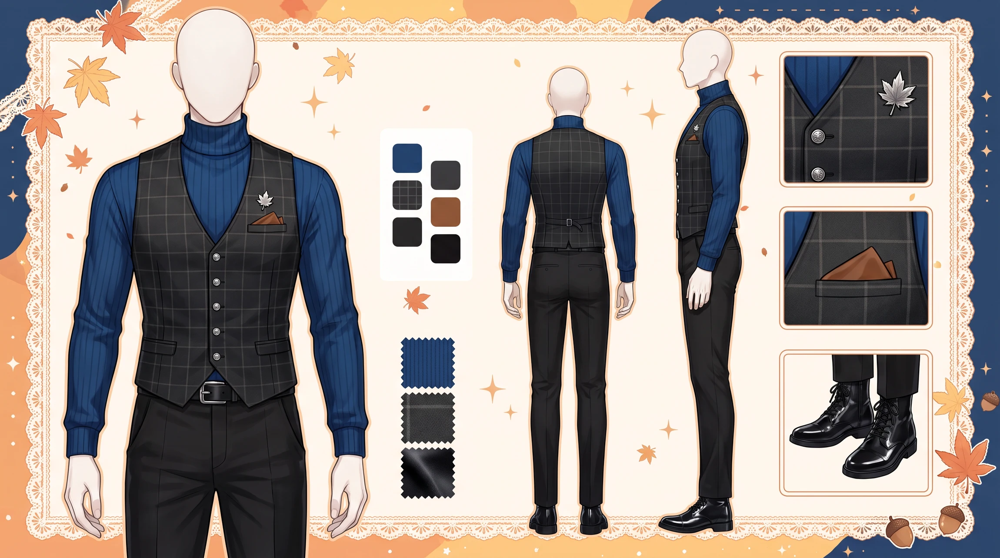
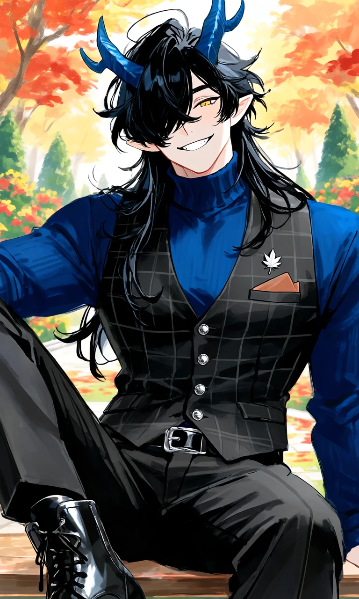

The Silverleaf Scholar

Outfit Prompt
A deep midnight-blue fine-knit turtleneck beneath a fitted black wool waistcoat with a subtle charcoal windowpane check, antique-silver buttons, and a muted copper pocket square. Black tailored trousers, a black leather belt with a brushed-silver buckle, and polished black leather ankle boots. A small antique-silver maple-leaf pin decorates the waistcoat, completing the quietly festive autumn outfit.
Outfit Examples

